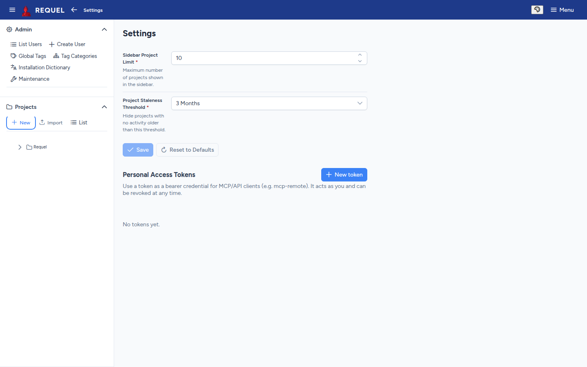

API, MCP and CLI
Everything the web UI does is available to scripts and AI clients, under the same permissions.
One gateway, three ways in
The web UI, the MCP server and requel-cli all go through the same commands and
queries. Whatever signs in acts as one Requel user: that user’s
stakeholder permissions decide what it may read
and change, and every change is recorded in the audit log under their name. Give an AI client
or a script its own user with only the permissions it needs.
Personal access tokens
Scripts, CI jobs and AI clients that can’t open a browser use a personal access token.
An administrator first gives the user the manageApiTokens permission
(users). Then, in Menu →
Settings:
- New token, give it a name (what will use it) and an expiry.
- Copy the token (it starts
reqpat_). It is shown only once. - Send it as
Authorization: Bearer reqpat_….

The list shows when each token was last used. Revoke stops one working at once.
The REST API
- Reads are
GET /api/…, for exampleGET /api/projectsorGET /api/projects/{name}/open-issues. - Changes are commands:
POST /api/commands/{type}with a JSON body, for exampleEditGoal. - Log in with a token as above, or
POST /api/auth/loginwith a username and password for a short-lived token.
curl -H "Authorization: Bearer $REQUEL_TOKEN" http://localhost:8080/api/projectsAI clients over MCP
Requel is an MCP server at /api/mcp (Streamable HTTP). Claude, Codex, VS Code
and other MCP clients can read a project, search it, list open issues and make changes as
tools. Add it to your client by URL, for example
http://localhost:8080/api/mcp; the client then signs in one of two ways:
- OAuth, for interactive clients: a browser opens on Requel’s login and consent page, and the client keeps the token. Nothing to copy.
- A personal access token in the client’s
Authorizationheader, for headless use.
Client-by-client steps are in
Connecting
an MCP client and
VS Code.
To run the MCP server read-only, start Requel with
--requel.gateway.write.enabled=false.
requel-cli
A command-line client for the same queries and commands. In 2.0 it is built from source:
mvn -pl modules/requel-cli -am package -DskipTests
alias requel='java -jar modules/requel-cli/target/requel-cli-2.0.0.jar'Sign in once per server; the CLI remembers it:
export REQUEL_URL=http://localhost:8080
requel login --token reqpat_... # or: requel login --oauth
requel projects
requel open-issues Requel
requel search Requel "project"
requel commands # the commands you can run
requel run EditGoal --input '{"projectName":"Requel","name":"A new goal"}'requel --help lists every subcommand; --output switches between
text and JSON.
Project files
For moving whole projects, use export and import. The XML follows the published project schema, so other tools can read and write it.